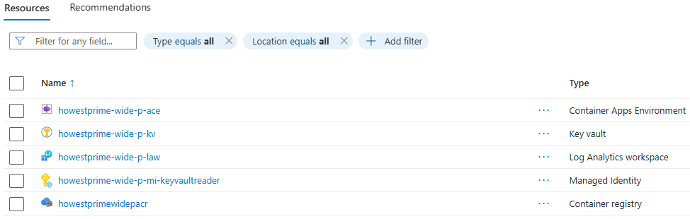

Howestprime Wide
Let’s start with the Howestprime-wide resources. These resources are shared across the entire project and are used by all microservices and applications. The following sections will guide you through the process of creating these resources using Terraform.
READING GUIDE:
- Required settings are explicitly called out in each section.
- Test sections indicate where to validate your progress.
- Notes / hints / reminders highlight common pitfalls.
High-Level Overview
- Scaffolding and creating the resource group
- Initial file creation and configuration
- Creating the key vault
- Used to securely store secrets and other sensitive information for Howestprime.
- Creating the container registry
- Stores Docker images for the applications to be containerized.
- Creating the message broker
- Facilitates event communication between the different microservices.
- Log Analytics
- The workspace for storing logs and metrics from various project resources.
- Container environment
- The environment where microservices will run. Azure provides a serverless container environment called Azure Container Apps, which is used to host these microservices.
- GitHub build pipeline service principal
- GitHub Actions will be configured to deploy microservices to the container environment. This requires a service principal to allow the pipeline to access the container registry and deploy to Azure.
- Managed identity for reading the key vault
- A managed identity in Azure enables Azure services to authenticate to other Azure services without managing credentials. This identity will be used by the microservices to securely access the key vault and other resources.
Scaffolding and Creating the Resource Group
Create the following files:
main.tf: Main file, contains the entry point for the Terraform code.variables.tf: Contains the variables used in the Terraform code.variables.auto.tfvars: Populates the variables with concrete values..gitignore: Ignore the sensitive file and other unnecessary files.variables.sensitive.auto.tfvars: Contains values for variables that are sensitive and should not be exposed in the code. This file is ignored by git and should not be shared with anyone.
Create the terraform config block with azurerm provider in the main.tf file.
-
Create a terraform block to specify the required version of Terraform and the required providers. In this case, we will use the
azurermprovider to manage Azure resources.- Terraform required version: 1.14.5
- AzureRM provider version: 4.61.0
-
Now create both provider blocks in the
main.tffile. Configure both providers inmain.tf.- Leave the values for the provider configuration empty for now. We will fill them in later when we create the variables and populate them with values.
Use these requirements:
REQUIRED provider configuration checklist:
- Add an
azurermprovider block. - Read
subscription_id,tenant_id,client_id, andclient_secret. - Add a
featuresblock. - Inside
features, enable the key vault destroy purge settings (purge_soft_delete_on_destroyandpurge_soft_deleted_secrets_on_destroy).
The subscription_id value can stay unset until the next steps where you define and populate the variables.
Initialize the Terraform project
terraform init
This will download the necessary providers and set up the backend for state management.
NOTE: All generated files should be in the
.gitignore.
Create subscription and tenant ID variables
- Create variables in
variables.tfto hold the subscription ID and tenant ID.- Example name for subscription ID:
howestprime_subscription_id.
- Example name for subscription ID:
HINT: Think very carefully about the names of your variables. A good variable name should be descriptive and indicate what the variable is used for. This will make it easier to understand the code and maintain it in the future. There will be a lot of variables in this project, so it’s important to have a clear naming convention.
-
variables.tfonly contains the variable definitions. The values for these variables should be provided in thevariables.auto.tfvarsorvariables.sensitive.auto.tfvarsfile. Thevariables.auto.tfvarsfile is used for non-sensitive variables, while thevariables.sensitive.auto.tfvarsfile is used for sensitive variables. Thevariables.sensitive.auto.tfvarsfile should be ignored by git to prevent sensitive information from being exposed.- Provide values for the following variables:
howestprime_subscription_idhowestprime_tenant_id
- Provide values for the following variables:
-
Assign these variables to the azurerm provider in the
main.tffile. -
Make sure the sensitive file is ignored by git
Create a service principal for Terraform
Because Terraform needs to authenticate to Azure to manage resources, we need to create a service principal that Terraform can use for authentication. This service principal will be used in the provider configuration to allow Terraform to manage resources in Azure.
- First, create
service_principal_terraform_client_id,service_principal_terraform_secretandservice_principal_terraform_sp_id (this is the objectID)variables invariables.tf. - Next, create a service principal in Azure Portal that will be used to authenticate Terraform. This service principal should have the following permissions:
- Owner role on the subscription
- Role Based Access Control Administrator
- In Entra ID assign the role application administrator to the service principal. By the end of this tutorial, you should know why this is needed.
- Through Entra ID > Roles and administrators > search for “application administrator” > click on the role > click on “Add assignments” > search for the service principal > select the service principal > click on “Add”.
- Assing values to the new variables in the
variables.sensitive.auto.tfvarsfile.
Create a resource group
In this project, we will create a resource group that will be used to hold all the resources for the Howestprime project.
- First, create a variable in
variables.tfto hold the location of all future resources. - Provide a value for this variable in the
variables.auto.tfvars(not sensitive) file - Create another variable (dictionary) in
variables.tfto hold the names of all resources- This will make it easier to manage the names of the resources and ensure consistency across the project. It also allows you to easily change the name of a resource in one place if needed.
- This a map or dictionary variable.
variable "resource_names" {
description = "Map of resource names to assign to the resources."
type = map(string)
}
- Add an entry to this map variable in the
variables.auto.tfvarsfile.
# Example
# mapKey = the identifier of the resource in the Terraform code
# mapValue = the name of the resource in Azure
resource_names = {
mapKey = mapValue
azurerm_resource_group_howestprime = "howestprime-wide-p-arg"
}
- Now, create the resource group in a new file called with example name
howestprime_wide_resource_group.tf.- Use clear and meaningful names for all files. In this case, the word wide indicates that this resource is used across all resources in the project.
Test the resource group creation
- Run the following command to validate the resource group configuration:
terraform plan
- If the configuration looks correct, execute the following command to provision the resource group:
terraform apply
- Verify the resource group was created successfully through az CLI or the Azure portal
az group list
REMINDER: Do not edit Azure resource properties through the Azure portal. This can cause issues with Terraform state management. Always make changes to resources through Terraform to ensure the state file is up to date and consistent with the actual resources in Azure.
Creating the Key Vault
Another resource used across the whole project is the key vault. This resource is used to store secrets and other sensitive information for Howestprime.
The Key Vault
- Add an entry in the
resource_namesvariable invariables.auto.tfvarsfor the key vault name. - Create a new terraform file for the keyvault.
- Add a Key Vault resource with at least the following properties configured:
- Required properties:
- Remember: many properties like
resource_group_name,locationcan be fetched from the resource itself by using the resource reference, e.g.,azurerm_resource_group.howestprime.name. - name, resource group, location, tenant ID
- standard SKU
- soft delete retention set to 7 days
- purge protection disabled
- disk encryption enabled
- deployment and template deployment enabled
NOTE: Make sure you understand the impact of the properties you set.
Terraform needs an extra Key Vault role
- Extend
howestprime_wide_keyvault.tfwith another role assignment for the Terraform service principal.- Purpose: allow Terraform to manage the key vault itself (e.g., update access policies, delete the key vault).
- Role:
Key Vault Administrator. - Scope: the Howestprime key vault.
- Principal: Terraform service principal ID (object ID).
- Add an explicit dependency on the key vault resource.
- This ensures that the role assignment is created only after the key vault is created, preventing potential issues with resource creation order.
The principal ID is the Object ID of the service principal NOT the Object ID of the App Registration.
WARNING: Do not use the App Registration Object ID here.
- Subscriptions > IAccess control (IAM) > Role assignments > search for the service principal > click on the service principal > copy the Object ID.
Test the key vault creation
Plan and apply the Terraform configuration to create the key vault. Verify the key vault was created successfully through az CLI or the Azure portal.
Creating the Container Registry
The container registry is used to store Docker images for the applications we will containerize. The container registry is a private registry for storing and managing Docker images.
- Add an entry in the
resource_namesvariable invariables.auto.tfvarsfor the container registry name.- No spaces or special characters are allowed in the name of the container registry. The name must be unique across all Azure container registries.
- Create a new terraform file for the container registry.
- Add the container registry resource to this file.
- Required settings for the container registry resource:
- Name (this name is unique across Azure, so choose a name that is unlikely to be taken)
- Resource group and location from your existing setup
- SKU set to
Basic - Admin user disabled
- Know why we do this.
Test the container registry creation
Plan and apply the Terraform configuration to create the container registry. Verify the container registry was created successfully through az CLI or the Azure portal.
Creating the Message Broker
The message broker is used to send events between the movies and ticketing services. This project uses a LavinMQ message broker from the cloud provider CloudAMQP.
- Create an account on CloudAMQP and create an API token with full access so the Terraform code can manage the message broker.
- Add a new provider to the required providers in the
main.tffile. The provider is calledcloudamqpand is used to manage the message broker in the cloud.- Use version “~>1.42” of the provider.
- Add the provider configuration to the
main.tffile. The provider requires an API token for authentication, which should be read from a sensitive variable. - Add an entry in the
resource_namesmap variable for the message broker name. - Create a new terraform file and create the message broker resource.
- Required settings for the message broker resource:
- Name from
resource_names - Plan set to
lemming - Region set to
amazon-web-services::eu-west-1- Or choose another region if you prefer.
- Name from
- Later, you will need information about this newly created message broker. This information can always be retrieved by adding a data block to the messagebroker terraform file.
# Example: data block to retrieve the credentials of the message broker
data "cloudamqp_credentials" "local-admin" {
instance_id = cloudamqp_instance.howestprime.id
}
- Add the messagebroker password to the key vault. This way, other resources can access the message broker password securely. This way, the service principal has access to the key vault and can add the secret.
- Terrafrom resource ID: “azurerm_key_vault_secret”
- Required settings for the Key Vault secret resource:
- Secret name that clearly identifies the message broker credential
- Secret value from the CloudAMQP credentials data source
- Key Vault ID referencing your Howestprime key vault
- Explicit
depends_onon the Terraform service principal Key Vault role assignment- The role
Key Vault Administratormust be assigned to the Terraform service principal before it can add secrets to the key vault. By adding an explicit dependency, you ensure that the secret is only created after the role assignment is in place, preventing potential issues with resource creation order.
- The role
- Because the provider was updated, reinitialize the Terraform project. This will download the new provider and update the state file.
# Reinitialize the Terraform project
terraform init -upgrade
Test the message broker creation
Plan and apply the Terraform configuration to create the message broker. Verify the message broker was created successfully (cloud amqp dashboard) and check in the Azure portal that the secret with the message broker credentials was added to the key vault.
NOTE: If you cannot view the secrets in the key vault, add the role
Key Vault Secrets Officerto your user account for the key vault. This will allow you to view the secrets in the key vault through the Azure portal. This is needed for testing purposes, but in a production environment, you would not give this role to a user account. Instead, you would use a managed identity or service principal with the appropriate permissions to access the secrets.
Log Analytics
The Log Analytics workspace is used to store logs and metrics for the different resources in the project. This resource is used to monitor the various resources and troubleshoot issues.
- Add an entry in the
resource_namesmap for the log analytics workspace name. - Create a new terraform file called
howestprime_wide_log_analytics.tfand create the workspace resource.- Only the name, resource group and location are required to create the workspace. You can use the existing variables for the resource group and location.
Test the log analytics workspace creation
Plan and apply the Terraform configuration to create the log analytics workspace. Verify the workspace was created successfully through az CLI or the Azure portal.
az monitor log-analytics workspace list
Container Environment
The container environment will be used to run the different container services (movies and ticketing). Azure provides its own container environment called Azure Container Apps, a serverless container environment for running distributed services.
-
Add an entry in the
resource_namesmap for the container environment name. -
Create a new terraform file and create the container environment resource.
-
Required settings for the container environment resource:
- Name from
resource_names - Resource group and location from your existing setup
- Log Analytics workspace ID from the workspace resource
- Name from
-
The Azure Container Apps environment requires an extra resource provider to be registered. Update the azurerm provider in the
main.tffile by adding the following property:
resource_providers_to_register = [ "Microsoft.App" ]
- This property is needed because the Azure Container Apps resource provider is not registered by default in Azure. By adding this property, you ensure that the provider is registered when you run Terraform, allowing you to create Azure Container Apps resources without manual intervention.
NOTE: If you get a region not allowed error when creating the container environment, check your allowed region through Policies > Assignments > Allowed locations. Choose another one of the allowed regions and try again.
Test the container environment creation
Plan and apply the Terraform configuration to create the container environment. Verify the container environment was created successfully through az CLI or the Azure portal.
Create a GitHub Build Pipeline Service Principal
The GitHub build pipeline service principal is used to authenticate GitHub Actions against Azure.
-
Create a terreform file and create the service principal:
-
Start by creating a new Azure Entra application for the GitHub CI/CD integration.
- Terrafrom resource ID:
azuread_application - Give the application a clear and recognizable display name.
- Terrafrom resource ID:
-
Create a time rotating resource
- Terraform resource ID:
time_rotating - Setting: rotating_days set to 180 days
- Terraform resource ID:
-
Create a client secret for that application so automated deployments can authenticate.
- Terrafrom resource ID:
azuread_application_password - Link the secret to a rotation trigger from above so Terraform can replace it automatically.
- Configure the rotation interval to 180 days.
- Terrafrom resource ID:
-
Create a new service principal linked to the GitHub CI/CD application.
- Terrafrom resource ID:
azuread_service_principal - Use the application’s client ID to associate both identities.
- azuread_application.NAME_OF_YOUR_RESOURCE.application_id
- Set the Terraform service principal as owner so Terraform can fully manage this identity lifecycle.
- Terrafrom resource ID:
Test the GitHub build pipeline service principal creation
Plan and apply the Terraform configuration to create the service principal. Verify the service principal was created successfully
In the portal, navigate to Entra ID > App registrations > search for the application name
Create a Managed Identity for Reading the Key Vault
A managed identity in Azure allows Azure services to securely authenticate to other Azure services without the need to manage credentials. In this project, a managed identity will be created for the services (movies & ticketing) to access the key vault and other resources securely.
Be sure you understand the distinction between a managed identity and a service principal.
IMPORTANT: A managed identity and a service principal are related concepts, but they are not interchangeable.
-
Add an entry to the
resource_namesmap for the managed identity’s name. -
Create a new Terraform file for the managed identity and define a user-assigned identity.
- Terraform resource ID:
azurerm_user_assigned_identity - Set the location to your shared project region.
- Use the managed identity name from the
resource_namesmap. - Reference the existing Howestprime resource group.
- Terraform resource ID:
-
Assign the “Key Vault Secrets Officer” role to the managed identity on the Howestprime key vault by creating a role-assignment resource.
- Terraform resource ID:
azurerm_role_assignment - Scope: the Howestprime key vault resource.
- Role definition:
Key Vault Secrets Officer. - Principal ID: the managed identity principal ID (not the application ID).
- azurerm_user_assigned_identity.NAME_OF_YOUR_RESOURCE.principal_id
- Add an explicit dependency on the key vault so role assignment happens after key vault creation.
- Terraform resource ID:
Test the managed identity creation
Plan and apply the Terraform configuration to create the managed identity. Verify the managed identity was created successfully
Test
It should be possible to completely destroy the resources and recreate them without any issues.
SUCCESS CRITERION:
terraform destroyfollowed byterraform applyshould complete without manual fixes.
WARNING: Don’t forget to clean up the resources after testing to avoid unnecessary costs.
Resource screenshot
Your resource group should look something like this in the Azure portal:
